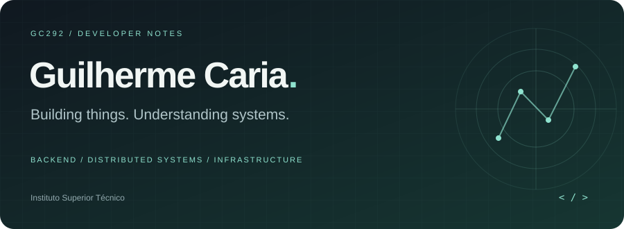
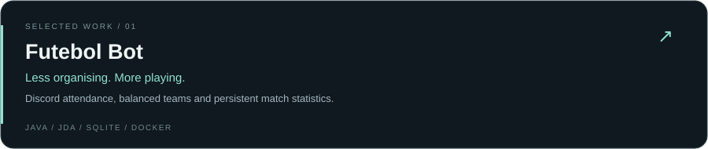
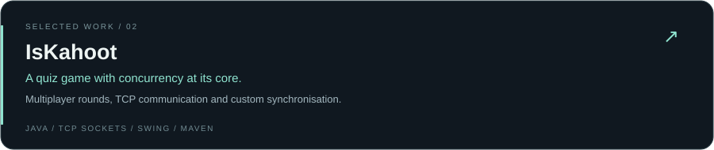
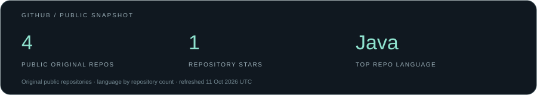

A little about me
Hey, I'm Guilherme — a student at Instituto Superior Técnico with an interest in backend development, distributed systems and the infrastructure that keeps them running.
I enjoy taking an idea all the way to something useful: from multiplayer games and Discord bots to exploring concurrency, persistence and deployment.
while (curious) {
build();
breakThings();
understandWhy();
improve();
}
My toolkit


Things I've built


More repositories ↗
Around here

Always curious about what happens under the hood.